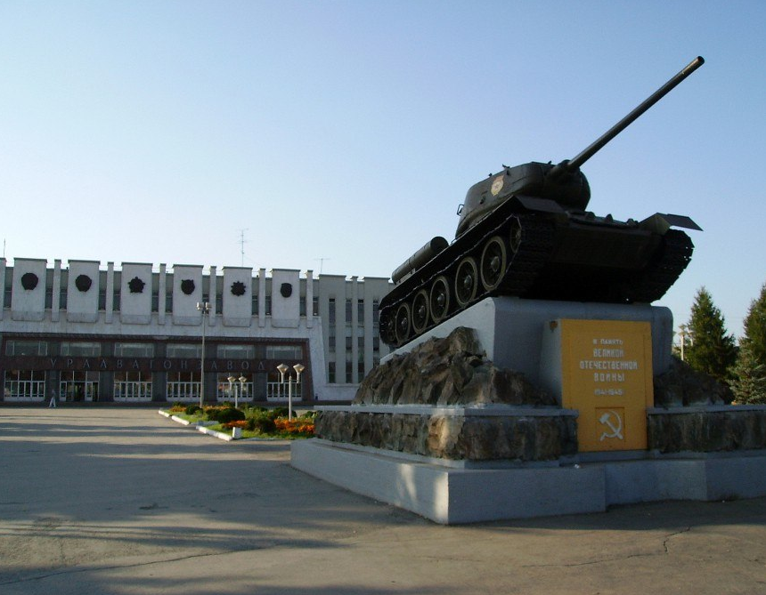

АО «Научно-производственная корпорация «Уралвагонзавод» (УВЗ) — одно из крупнейших машиностроительных предприятий России, основанное в 1936 году. Компания специализируется на производстве железнодорожной техники, бронетанкового вооружения и другой специализированной продукции. УВЗ является ключевым игроком в отрасли, сочетая многолетний опыт, инновационные технологии и высокие стандарты качества.
Сегодня УВЗ — это современное предприятие, которое активно развивается, внедряет передовые решения и вносит значительный вклад в укрепление экономики страны. Мы гордимся своей историей, стремимся к лидерству в отрасли и продолжаем создавать продукцию, отвечающую самым высоким требованиям.
